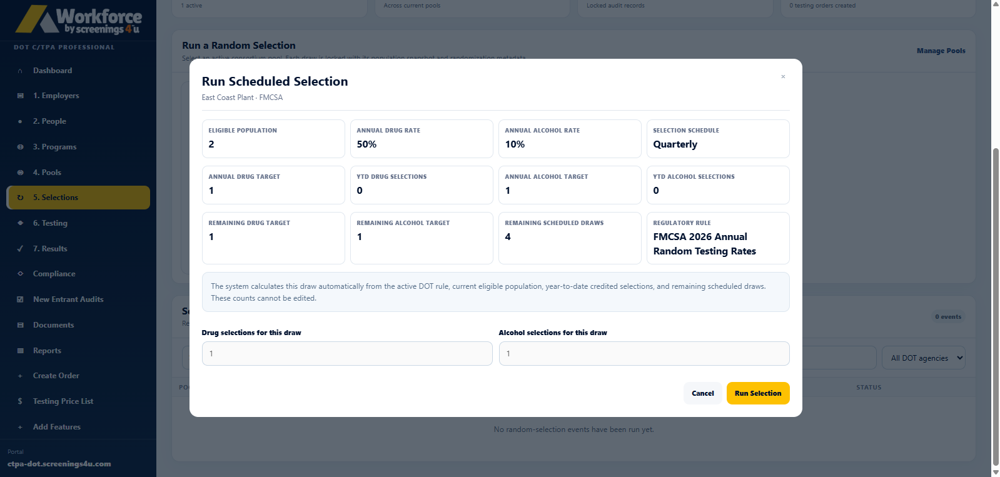
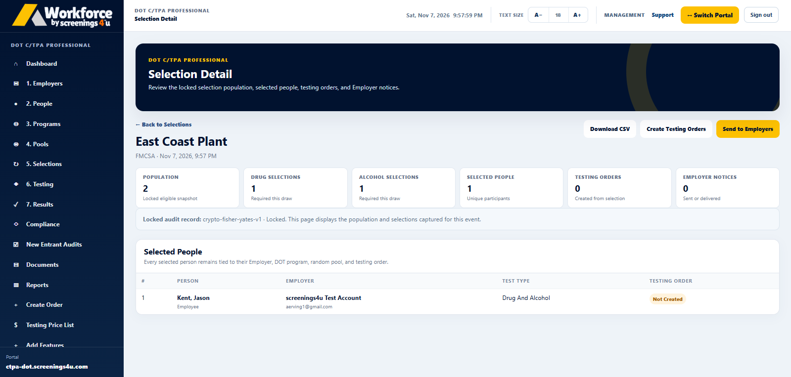

Covered populations
Understand which employees or drivers are associated with each program or pool.
Managing pools, selection events, participant records and testing follow-up can be complicated. Workforce helps bring the information together so your team can organize the process with more clarity and less manual tracking.
Software for C/TPAs, Employers and independent Owner-Operators

Program administrators must work with the right covered population, track selection events, coordinate testing and maintain relevant records. Disconnected spreadsheets and email threads make the operational picture harder to follow. Workforce provides a consistent software workspace for that information.
Help your team manage the work surrounding random selection programs without losing the important details.
Understand which employees or drivers are associated with each program or pool.
Keep track of scheduled selection activity and records associated with each event.
Connect selection activity to related testing coordination and available order information.
Bring supporting records and reporting into a workflow your team can navigate.
See how the operational steps fit together inside Workforce.

Work with relevant program records and covered populations as the starting point for random selection administration.

Maintain visibility into selection-related events and records in your authorized workspace.

Follow associated testing and result workflows without piecing together separate systems.
A good random testing workflow depends on more than the selection event itself. It needs organized program context, reliable follow-up and accessible records.

Find the subscription that matches your role and review the available features, plans and checkout options on its dedicated product page.
Coordinate employer clients, consortium pools, random selection activity, testing and related reporting.
From $125/monthExplore C/TPA Plans →FOR COMPANIESManage your own covered workforce, relevant testing programs, selections and documentation.
From $85/monthExplore Employer Plans →FOR INDEPENDENT DRIVERSOrganize single-driver FMCSA program information, pool participation and associated records.
From $74.95/yearExplore Owner-Operator Plans →